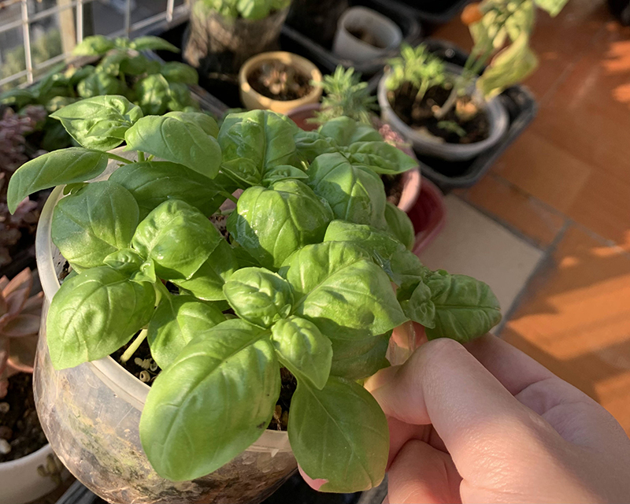

-
Hương thảo (rosemary)
Là loài cây thân gỗ có xuất xứ từ vùng Địa Trung Hải có khi hậu khô lạnh, hương thảo có mùi hương đậm như gỗ thông, còn được ví như sự giao thoa giữa cây xô thơm và hoa oải hương.
Mùi hương của rosemary có thể làm giảm stress, tạo sự thoải mái dễ chịu, vào mùa đông, bạn có thể xông lá hương thảo bằng cách sử dụng bếp xông thảo mộc bằng đất nung. -
Húng tây (Basil)
Có nhiều loại húng tây, phổ biến nhất là húng tây ngọt, ngoài ra còn có húng tía (ít vị ngọt hơn húng tây thông thường, húng chanh (có vị chanh) và húng Thái (vị cam thảo). Cây húng tây rất dễ trồng, nhưng nó chỉ phát triển tốt ngoài trời vào mùa hè khi khí hậu đã trở nên ấm áp. Khi thời tiết trở lạnh, basil có xu hướng phát triển chậm hơn, thậm chí là gần như không phát triển. Vì vậy hãy lên kế hoạch trồng cây cho phù hợp nhé.
-
Xạ hương (Thyme)
Xạ hương hay thyme là loài cây gia vị Âu mọc thành bụi thấp với những chiếc lá nhỏ li li và mùi hương đậm đà khó lẫn với bất kì loài cây nào. Tương tự như hương thảo, xạ hương là loài cây thường xanh nên bạn có thể thu hoạch quanh năm, lưu ý rằng xạ hương có hương vị thơm ngon nhất vào đầu mùa xuân và mùa hè.
-
Mùi tây (Parsley)
Nếu bạn đã từng chơi Restaurant Dash: Goldon Ramsay, chắc hẳn bạn đã cực kì quen thuộc với loại rau thơm này. Rau mùi tây có thể được thêm vào nhiều công thức nấu ăn từ súp, món hầm cho đến món trứng tráng và salad. Cách sử dụng tương tự như cây mùi ta, đó là thái nhỏ và tận dụng cả lá và thân.
-
Sage (Xô thơm)
So với hương thảo, húng tây hay xạ hương thì cây xô thơm ít phổ biến ở Việt Nam hơn nhưng không vì vậy mà loài thảo mộc này kém sức hút. Cây xô thơm là loại cây bụi thấp tán rộng với những tán lá màu xanh xám mềm như nhung rất mát mắt phù hợp trồng trong chậu.